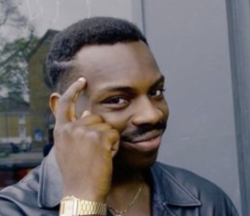

Moja pierwsza strona dzifko

Tu jest jakis bezsensowy text w jakiejś chujowej czcionce którą sciagnalem z neta
Tu też jest jakiś bezsensowny text ale bedzie bardzo dlugi zeby pocwiczyc akapity Olympus Mons jest wygasłym wulkanem tarczowym, powstałym w wyniku powolnego i długotrwałego wycieku lawy, przez co jego zbocze jest nachylone pod małym kątem – 5 stopni (takie wulkany można znaleźć także na Wenus i na Ziemi; np. Mauna Kea na Hawajach). Wznosi się na 21 229 metrów ponad średnią powierzchnię planety i 25–27 kilometrów nad otaczającą go równinę. Na tej wysokości ciśnienie atmosferyczne jest mniejsze od 0,1 ciśnienia na powierzchni Marsa, ale i tak szczyt może być pokryty chmurami zestalonego dwutlenku węgla. Olympus Mons mierzy 624 km średnicy u podstawy, wyraźnie zaznaczonej skarpami o wysokości dochodzącej do 6 km. Znajdujący się na wierzchołku krater ma długość 85 km, szerokość 60 km oraz głębokość 3 km. Na szczycie znajdują się liczne zapadliska